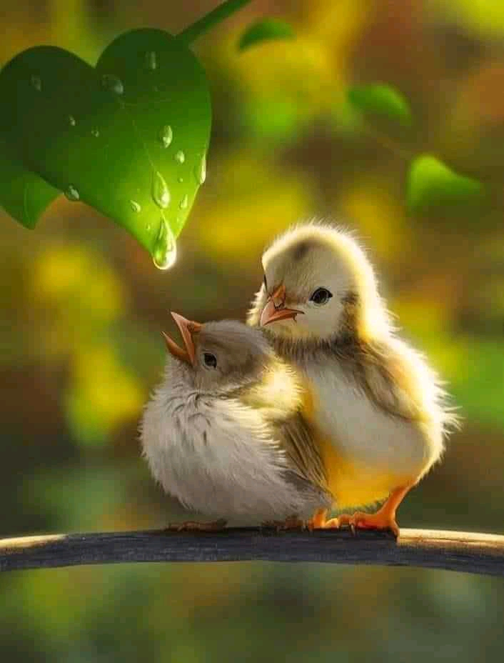
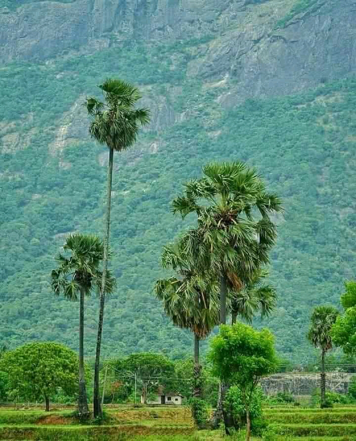
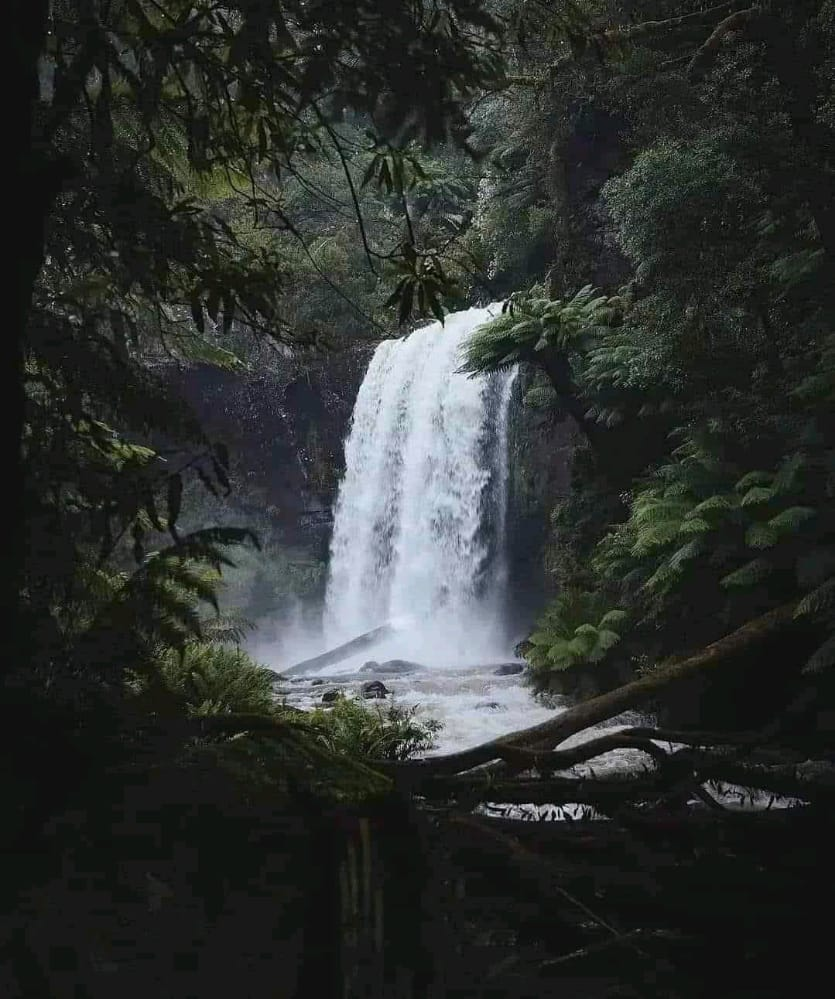
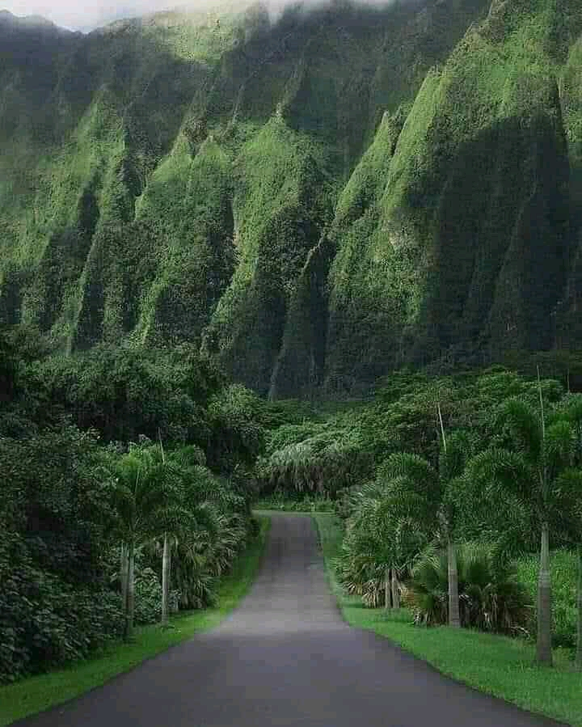
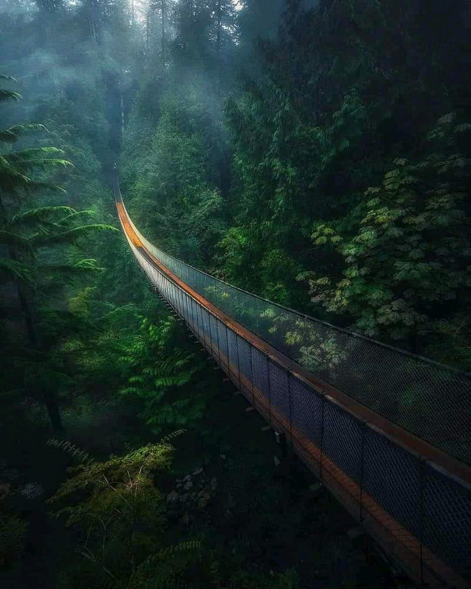
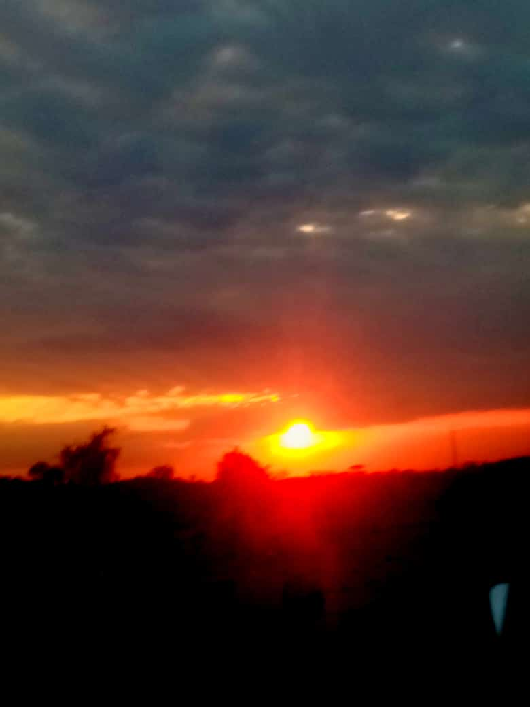
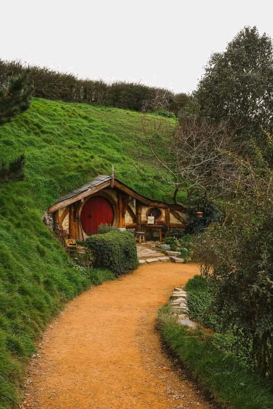
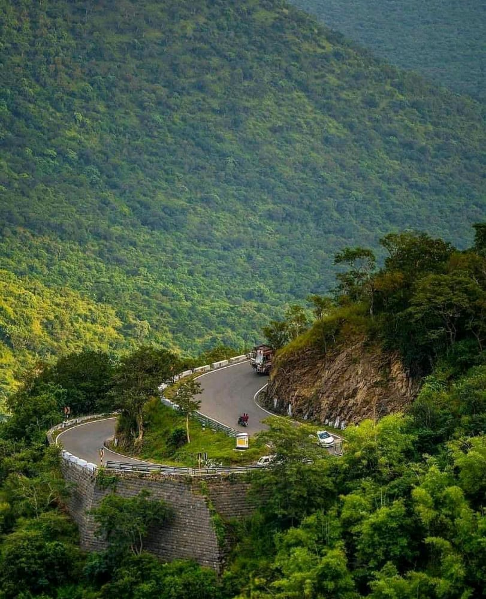

Tracy Mbone is a software developer at Moringa School.previously,Tracy was a student at St.Maria Goretti highschool.Our world today is a website that mostly focused on nature and our natural environment.
When we talk about nature then we will be exploring both our internal and external environment.As we all know nature is diverse.Birds are made of diffrence species and the behave diffrently in our natural environment.There are some birds that fly miles away in such of food and water.Some fly in groups while others fly as individuals. Most importantly is that we should take good care of nature.This is simply because they make part of our surroundings.When we talk about ocean life then we will get to know the diversity in there.We have different species of fish and ocean plants.We should therefore not pollute this waters for they save some major roles that we might not know unless we take a deep glimps about nature.
In our world today we have both our natural and artificial environment.When we talk of natural environment this means that it existed by it own.In other words it means that human beings did not take part in its trival. The artificial environment is environment which human being took place in its trival.This may include the planted forests. In both cases of our natural and artificial environment we are human should challenge ourselves in taking good care of them. When we live in a conducive environment we will all be happy because fresh air is used in our respir atory system.We should keep our world today as conducive as possible by not polluting either water,air or sound.
      